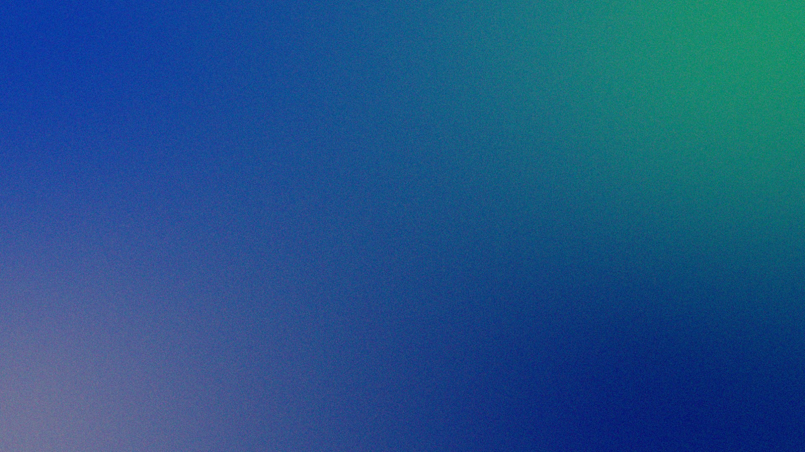

Dónde estamos, qué falta y qué necesitamos resolver antes de fin de año.

De la situación actual a lo que necesitamos de ustedes
Cifras principales al cierre de octubre
De las 77 previstas para la primera etapa.
EjemploYa entregan su información cada semana.
EjemploAntes de la fecha comprometida de enero.
Ejemplodel plan total, cuatro puntos sobre lo previsto a esta fecha.
Estado de cada frente de trabajo
La base está cargada y se actualiza sola.
Funcionan y se afinan con cada revisión.
Falta acordar el alcance de la segunda etapa.
El piloto parte cuando se cierre el alcance.
Qué entrega cada una durante el primer año
Disponibilidad y consumo por cuenca, mes a mes.
Demanda proyectada y fuentes disponibles por zona.
Rutas, puertos y tiempos, con alertas de atraso.
Uso de suelo y restricciones en una sola vista.
Hecho, en curso y lo que proponemos desde hoy
Cómo pasa el trabajo de un equipo a otro
Reunir los datos y ordenar lo que ya existe.
Acordar la solución con quienes la usarán.
Desarrollar y revisar cada dos semanas.
Usarlo con un grupo chico y medir.
Dejarlo andando con la contraparte.
Quién hace qué; los nombres se agregan al confirmar la propuesta
Prioridades, plazos y relación con la contraparte.
Fuentes, modelo y tablero de seguimiento.
Visitas, entrevistas y pruebas con usuarios.
Herramientas, integración y traspaso.

Cada una tiene un plazo y un responsable
Con las tres decisiones tomadas, partimos el piloto en enero y mantenemos la fecha comprometida.